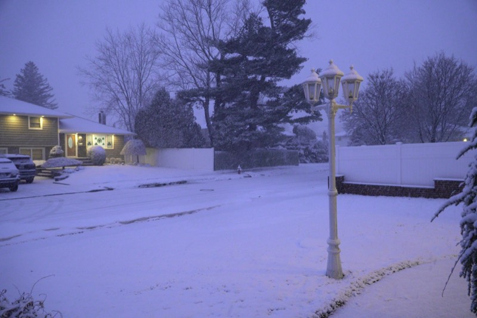

FIELD NOTES 001

NYU CS + Data Science
I make software that works, looks sharp, and feels personal. I like analytics, product builds, hackathon speed, and images that actually say something.
FIELD NOTES 001
About me
I care about shipping work that is useful first, but I still want the visuals to feel intentional.
Real photos only

How I work
Fast when I need to be. Clean when it matters. Better when both happen.
What I like building
Dashboards, ETL pipelines, MVPs, research tools, and sites that do not feel generic.
Why photography stays here
It keeps my taste honest. Framing matters in code too.
Selected work
These are pulled from GitHub and backed by real work in research, client delivery, hackathons, and robotics.
Experience
Built ETL pipelines, cleaned 14k+ donation records, and shipped analytics dashboards for Riverkeeper work.
Worked on mobile manipulation, voice-command workflows, and object detection for a Mobile ALOHA robot.
Led website work, shipped responsive frontend builds, and handled the mix of fast iteration and public-facing polish.
Built drive systems, autonomous tooling, and robot code that had to perform under real constraints.
Soundtrack
I cut the direct Spotify plug and turned it into something cleaner: a visual section about what music does for the workflow.
Listening window
Open Spotify
Playlists are part of how I lock in. This section stays because it is real, just not as a random button anymore.
Photography
This stays personal on purpose. No generated filler. Just frames that say how I see things.
Contact
If you want to build something, talk through an idea, or just reach out, this is enough.